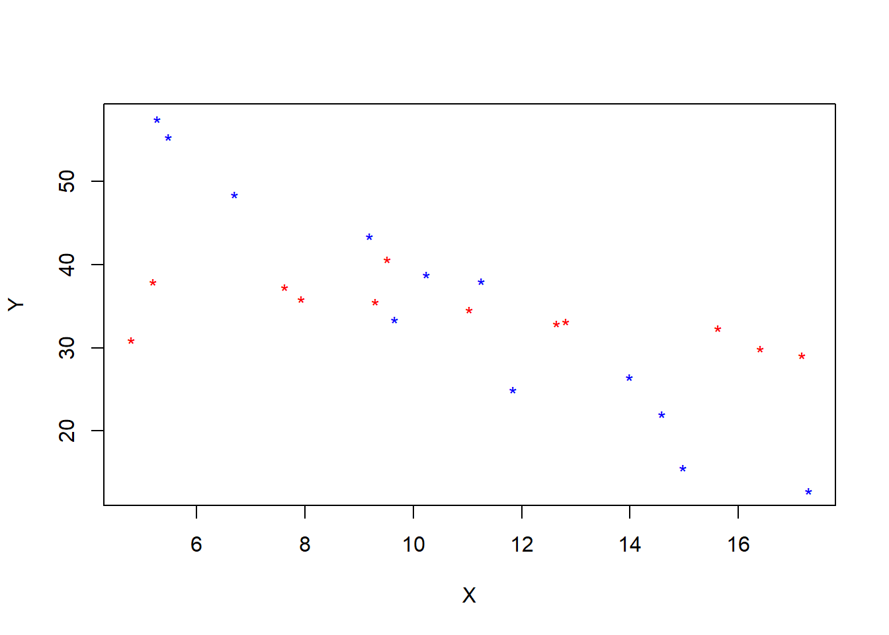
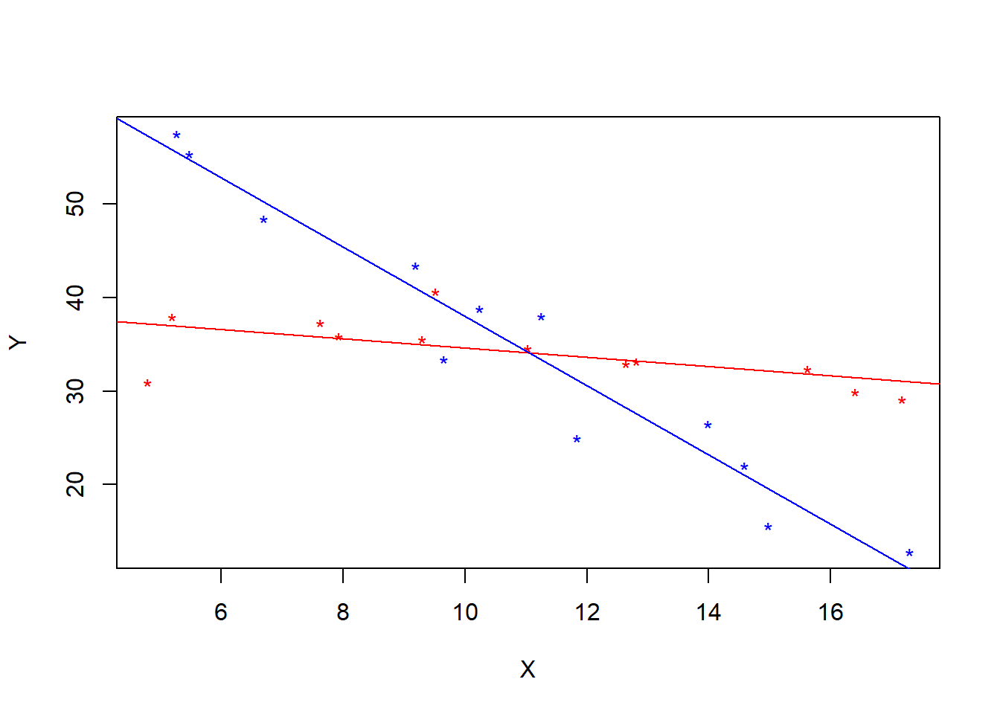

Chapter 15 Analysis of Covariance
A good resource is the beginning of Ch. 22 in Kutner et al.
ANCOVA incorporates a continuous explanatory variable into ANOVA, where we study the effects of treatments on responses. The idea is to reduce variability by controlling for the value of the explanatory variable, similar to the use of blocking variables in RCBD.
A state’s tourism department studies the effects of different commercials on viewer’s desires to travel to their state. The control for $x = $ the pre-study attitude toward the state, as measured on an ordinal scale. See Figure 22.1. in Kutner
The linear model can be written
\[Y_i =\beta_0 + \beta_1 x_i + \beta_2 \tau_i + \beta_3 \alpha_i + \epsilon_i\]
where \(\tau_i\) is 1 if the ith person viewed commercial 1, and \(\alpha_i\) is 1 if the ith individual viewed commercial 2. This means we have the following three lines:
\[y_i = \beta_0 + \beta_1 x_i\quad \text{for commercial 3}\]
\[y_i = (\beta_0 + \beta_2) + \beta_1 x_i\quad \text{for commercial 2}\]
\[y_i = (\beta_0 + \beta_3) + \beta_1 x_i\quad \text{for commercial 1}\]
or, in other words, the three treatments correspond to lines with the same slope, but difference intercepts.
15.1 Choice of “concommitant” variable
- It should be correlated (linearly/transformable to linear) with the response.
If it is not correlated with treatment then including it in the analysis will not increase the “explained” variation in response / will not reduce the unexplained variance (SSE).
- It should NOT be associated with the treatment.
Good example in Kutner. Suppose two teaching methods are being compared based on a continuous response summarizing learning outcomes. The analysts choose student’s “study time” as a concommitant variable. When they fit the regression/ANCOVA model the teaching method is not significant, but study time is highly significant. The reason is that study time was highly correlated with teaching method. It’s unclear how to interpret the results, and they depend on causality/human behavior. For example, if the different teaching methods caused different study time behaviors, then the investigators could claim one method is better than the other.
15.2 Interaction and regression slopes
There are instances in which the categorical variables are correlated with the concommitant (continuous) variable. This is more likely for observational data. For example, the categorical variable may be sex M/F and may be associated with an explanatory variable. In that case, we can incorporate interactions bewteen \(x\) and sex and these have the effect of changing the slope of the regression line for M versus F. For example,
\[y_i = \beta_0 + \beta_1x_i + \beta_2 \alpha_i + \beta_3 x_i\alpha_i + \epsilon_i\] \[y_i = (\beta_0 + \beta_2) + (\beta_1 + \beta_3)x_i + \epsilon_i \quad\text{for Females, coding }\alpha_i = 1\] \[y_i = \beta_0 + \beta_1x_i + \epsilon_i \quad\text{for Males, coding }\alpha_i = 0\]
15.3 Inference questions
In ANOVA we compare treatment means to see if there are significant differences. In ANCOVA we compare treatment means CONDITIONAL on \(x\), as in regression. So, it is important to recognize the inference question is different. If there is no interaction, then the regression lines for different treatment groups are parallel, and it does not depend which \(x\) value we are conditioning on. If the \(x\) variable is associated with the treatment variable, however, then this idea may not work because different treatments may have different ranges of \(x\) values and conditioning on an \(x\) value may imply a specific treatment – extrapolation.
15.4 Example
An application of ANCOVA to designed experiments is when one factor of a two-factor study is treated as continuous. For example, response is crop yield and treatments are watering regime and sowing density where sowing density is measured continuously.
xfun::embed_file('ancova.csv')crops <- read.csv('ancova.csv')
colors <- ifelse(crops$A==0, 'blue','red')
plot(Y~X, col = colors, data = crops, pch = '*')
my.lm <- lm(Y~X+A+X*A, data = crops)
summary(my.lm)##
## Call:
## lm(formula = Y ~ X + A + X * A, data = crops)
##
## Residuals:
## Min 1Q Median 3Q Max
## -6.2559 -1.5639 0.5743 1.7468 5.8096
##
## Coefficients:
## Estimate Std. Error t value Pr(>|t|)
## (Intercept) 75.0250 2.9970 25.033 < 2e-16 ***
## X -3.7038 0.2610 -14.191 6.66e-12 ***
## A -35.3886 4.0960 -8.640 3.48e-08 ***
## X:A 3.2047 0.3557 9.009 1.78e-08 ***
## ---
## Signif. codes: 0 '***' 0.001 '**' 0.01 '*' 0.05 '.' 0.1 ' ' 1
##
## Residual standard error: 3.354 on 20 degrees of freedom
## Multiple R-squared: 0.9114, Adjusted R-squared: 0.8981
## F-statistic: 68.6 on 3 and 20 DF, p-value: 1.054e-10plot(Y~X, col = colors, data = crops, pch = '*')
abline( 75.0250-35.3886, -3.7038+ 3.2047, col = 'red')
abline( 75.0250, -3.7038, col = 'blue')
Interpretations: The t-tests reveal that there is a difference in the conditional mean response in each treatment group conditional on \(x\). But, the significant interaction means that this difference is different depending on the \(x\) value we condition on (lines are not parallel).
Follow up by doing inferences on differences in conditional mean responses between treatments at specific \(x\) values.
X <- model.matrix(Y~X+A+X*A, data = crops)
XX.inv <- solve(t(X)%*%X)
beta.hat <- my.lm$coefficients
x1 <- matrix(c(1,11,0,0),4,1)
x2 <- matrix(c(1,11,1,11),4,1)
t.stat <- (t(x1)%*%beta.hat - t(x2)%*%beta.hat)/sqrt((3.354^2)*((t(x1)%*%XX.inv%*%x1)+(t(x2)%*%XX.inv%*%x2) - 2*(t(x1)%*%XX.inv%*%x2)))
t.stat## [,1]
## [1,] 0.099680582*(1-pt(abs(t.stat), 20))## [,1]
## [1,] 0.9215903